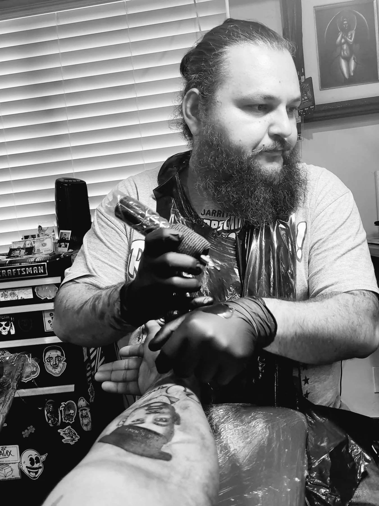
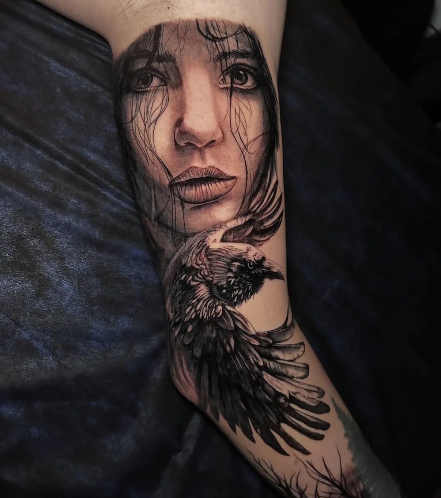
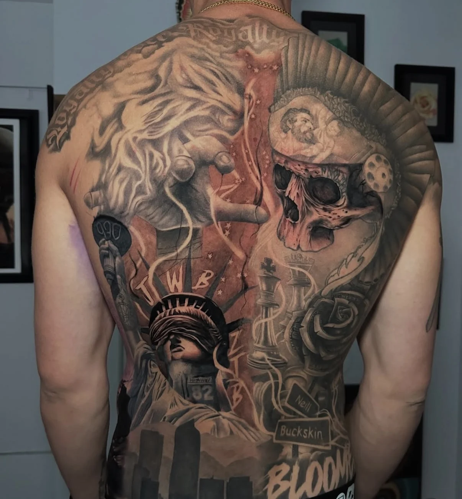
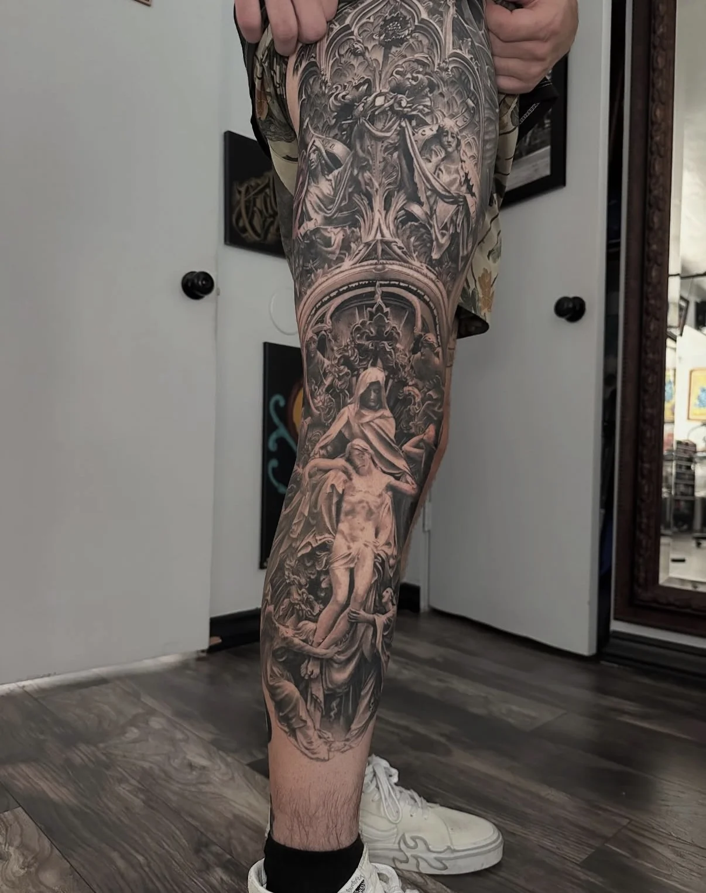
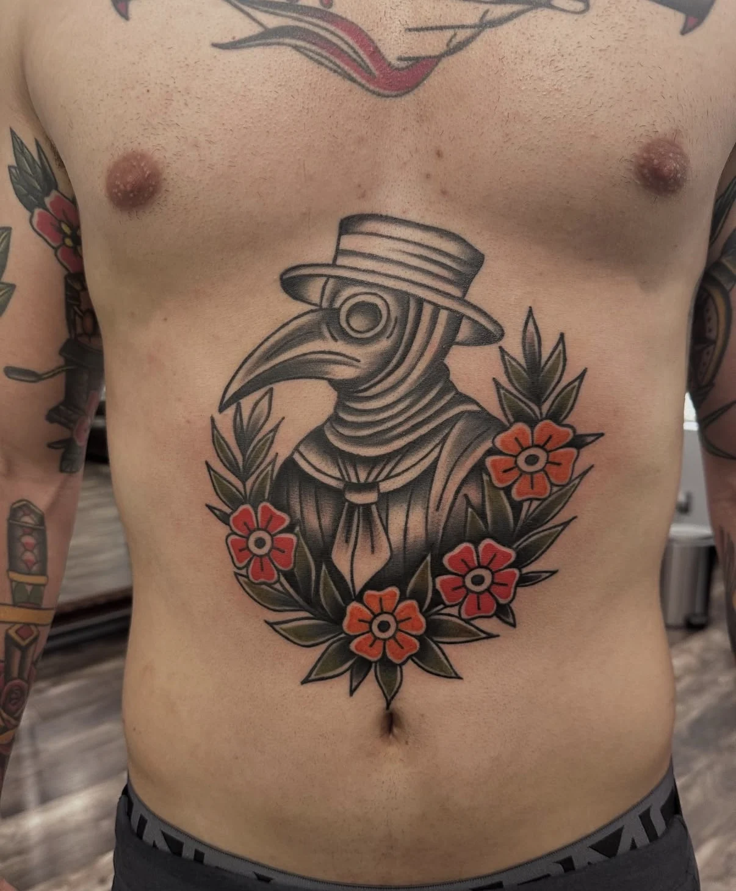
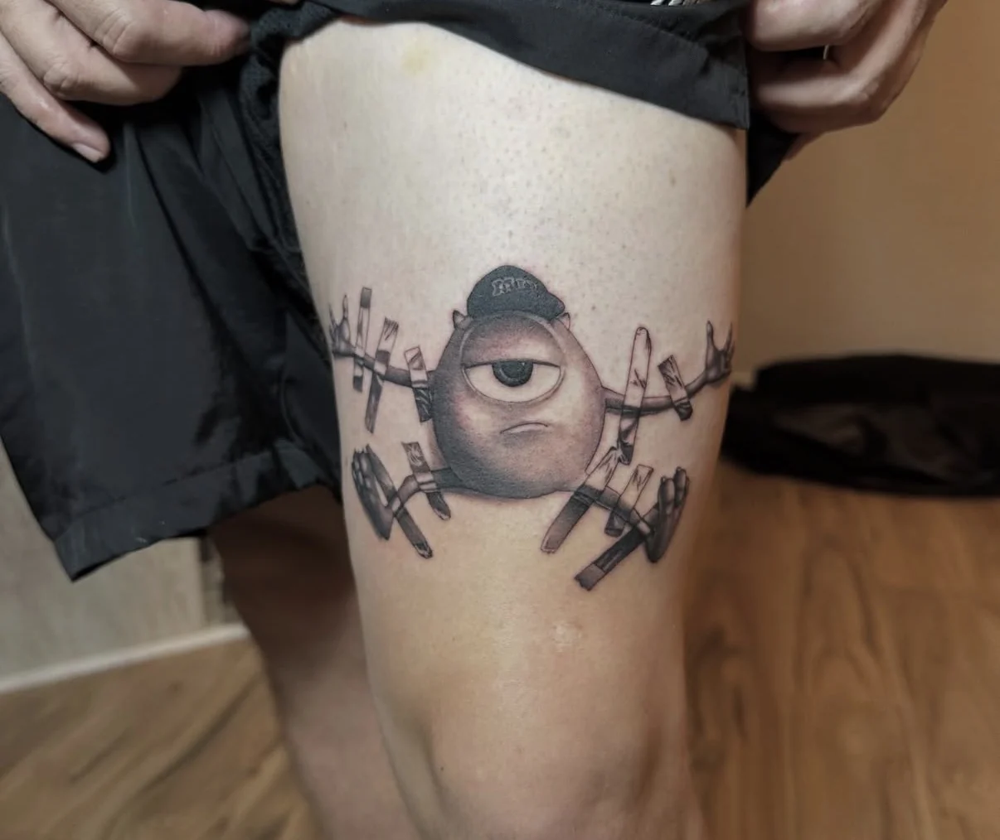

Growth strategy
Clarify the objective, market, audience, offer, priorities, and path from idea to action.
Rare Finds. Real Value. Veteran-Owned.
2 Ships RW LLC brings strategy, modern systems, relationships, marketing, and commercial execution together around one clear objective.
The operating idea
Some opportunities need a strategy. Others need a campaign, a system, a partner network, or a path to market. We organize the right pieces around the result instead of forcing every problem into one service.
See how the work movesCapabilities / 01
Focused support for founders, businesses, professional-service firms, and mission-driven organizations.
Clarify the objective, market, audience, offer, priorities, and path from idea to action.
Use practical automation, content workflows, research, and operating tools where they create real leverage.
Build clear messaging, campaign assets, digital presence, and repeatable outreach without empty hype.
Identify aligned relationships, shape the value exchange, and move qualified conversations forward.
Evaluate opportunities, package offers, support go-to-market work, and develop practical revenue paths.
Bring structure, research, coordination, and disciplined follow-through to high-value work that crosses functions.
Approach / 02
Get precise about the objective, constraints, decision, and measure of progress.
Build the plan, system, message, partner map, and operating rhythm needed to move.
Put the work into the market, start the right conversations, and coordinate execution.
Read the evidence, protect what is working, correct what is not, and define the next move.
Selected initiatives / 03
Proof starts with the founder’s own operating work—not invented clients or borrowed credibility.
Veteran mental health, reintegration, mentorship, and suicide-prevention work built around practical support and community connection.
Visit Operation ShieldSelective commerce and opportunity development under the promise: rare finds, real value, veteran-owned.
AI-assisted research, production, brand, planning, and execution systems designed to turn limited bandwidth into consistent movement.
Operation Shield is a legally and operationally separate nonprofit. Its mission, donations, programs, and payment flows remain distinct from 2 Ships RW LLC.
Partner network / 04
2 Ships RW LLC develops aligned relationships that extend what we can move—from practical command-center systems to direct-to-consumer commerce.
Bruce Works helps owner-led service businesses organize scattered knowledge, document how work gets done, and build practical AI-assisted workflows inside tools they control. Its Command Center Foundation organizes the business knowledge base, assistant instructions, reusable process library, and starter workflows into one client-owned system.
Visit Bruce WorksFounded by Summer Rose Rodriguez-Washington, Better Derma extends the 2 Ships RW LLC partner network into direct-to-consumer skincare and our growing e-commerce skin-product lane.
Shop Better DermaInvestment opportunities / 05
2 Ships RW LLC highlights select operators whose skill, reputation, and expansion vision create a credible foundation for strategic growth conversations.

Expert Tattoo Portrait Artist
David is a private Orange County tattoo artist specializing in portraiture, black-and-gray realism, memorial work, custom sleeves, and large-scale compositions. Working from San Clemente, he is building toward a larger commercial studio and is open to qualified private-investor and strategic-partner conversations.





Private expansion conversations only. This page is informational and does not present securities, investment terms, financial projections, or a promise of returns.
Founder / 06
Brandon Rodriguez-Washington is a retired U.S. Marine Staff Sergeant, California Army National Guard Staff Sergeant, former recruiter and station commander, Chapman University psychology student, father, and founder of Operation Shield. He brings nearly two decades of military leadership, operations, recruiting, emergency-response, and community-building experience.
His record includes coordinating personnel accountability and operational tracking for 2,000+ soldiers during a Los Angeles civil-support mission, contracting 77+ and shipping 76+ future Marines, leading HIMARS teams, safeguarding approximately $5.5 million in technical equipment, and teaching suicide prevention for more than a decade. At 2 Ships RW LLC, he applies that same discipline to strategy, partnerships, commerce, and execution.
Community resources / 07
Independent care resources are listed to help community members connect with qualified providers. 2 Ships RW LLC does not provide clinical services or control provider availability, eligibility, insurance coverage, or treatment decisions.
Led by Dr. Joseph M. Latham, Seahorse Psychology Center provides psychological testing and evaluation along with therapy for anxiety, depression, trauma and PTSD, military and veteran concerns, and other mental-health needs. The practice reports telehealth appointments, insurance acceptance, and services in California and Colorado; confirm current availability and coverage directly with the provider.
Urgent help: If you or someone else is in immediate danger, call 911. In the United States, call or text 988 to reach the Suicide & Crisis Lifeline.
Brand resources / 08
Review the full identity standards or download the production-ready logo package.
Start here / 09
Send the objective, what is blocked, and what a practical win would look like.
Email 2 Ships RW LLC